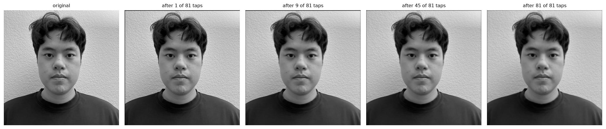
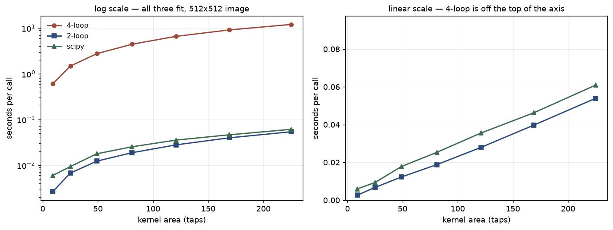
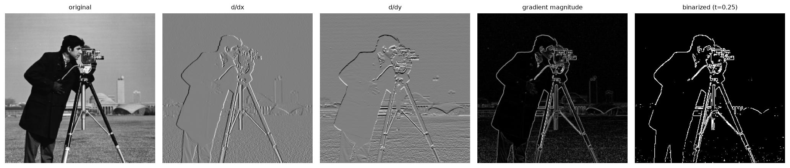
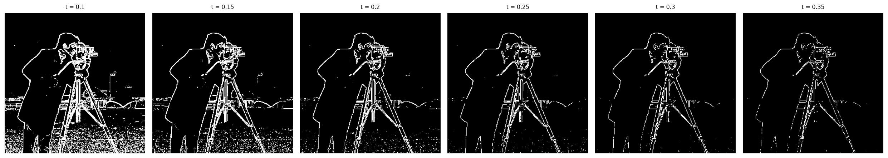
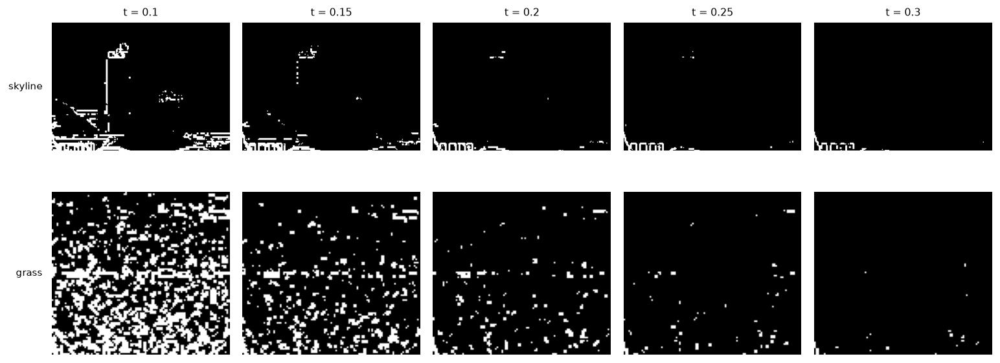
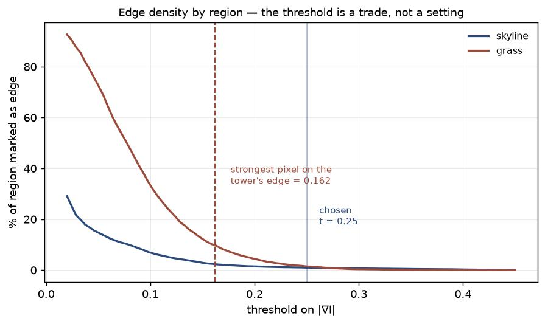
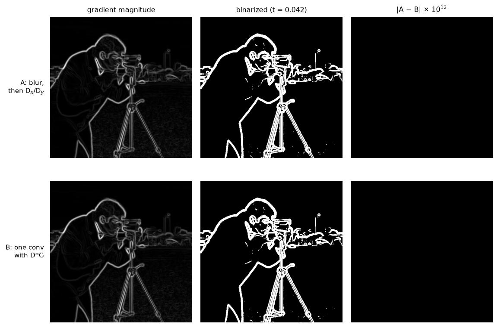
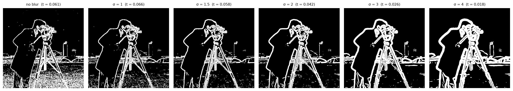
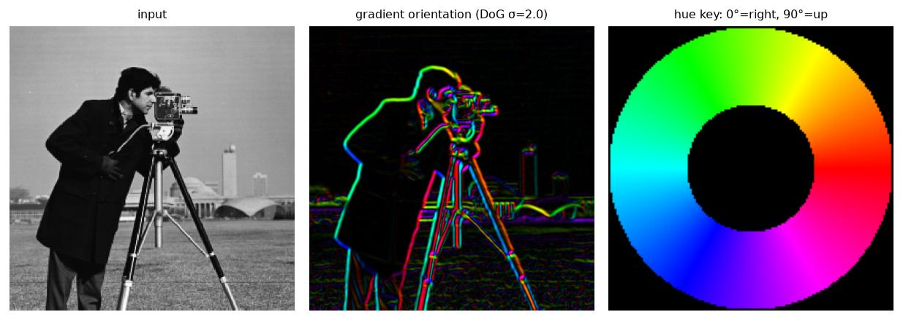

Convolution, edges, hybrid images, and multiresolution blending — Tim, Fall 2026
Everything here is one idea applied six ways: an image is a sum of frequency bands, and a filter decides
which bands survive. Keep the high ones and you get edges; keep the low ones and you get shape;
take the high bands from one photo and the low bands from another and you get an image that changes
as you walk away from it.
Part 1 builds convolution from scratch and uses it to find edges. Part 2 spends those filters on
sharpening, hybrid images, Laplacian stacks, and seamless blending.
1.1
Convolutions from Scratch
Two implementations of 2D convolution in NumPy — four nested loops, then two — checked against
scipy.signal.convolve2d for both correctness and speed.
Four loops
The literal definition: walk every output pixel, and under each one sum the products of the kernel
against the window it covers. The kernel is flipped in both axes before the loops start —
that flip is the only thing separating convolution from correlation, and for a symmetric kernel like
the box filter it makes no difference at all, which is exactly why it is easy to forget.
# convolve.py
def conv2d_4loop(im, k, mode="same"):
kf = k[::-1, ::-1] # flip -> convolution, not correlation
kh, kw = k.shape
padded, H, W = out_shape(im, k, mode)
out = np.zeros((H, W))
for r in range(H):
for c in range(W):
acc = 0.0
for i in range(kh):
for j in range(kw):
acc += padded[r + i, c + j] * kf[i, j]
out[r, c] = acc
return out
Two orderings of the same work
Both versions compute the same 21 million multiply-adds. They differ only in which loop is on the
outside — and therefore in what a single iteration costs, and what the half-finished output looks like.
Two loops
Same arithmetic, reassociated. Instead of visiting one output pixel and summing
kh·kw products, visit one kernel tap and apply it to every output pixel at once:
padded[i:i+H, j:j+W] is precisely the set of pixels that tap (i, j) touches.
The inner two loops collapse into a single vectorized add, so the Python interpreter runs
81 iterations for a 9×9 kernel instead of 21 million.
# convolve.py
def conv2d_2loop(im, k, mode="same"):
kf = k[::-1, ::-1]
kh, kw = k.shape
padded, H, W = out_shape(im, k, mode)
out = np.zeros((H, W))
for i in range(kh):
for j in range(kw):
out += kf[i, j] * padded[i:i + H, j:j + W]
return out
That difference is visible if you stop the 2-loop version partway through. Each panel below is the
output after n of the 81 taps have been added in, rescaled by 81/n so the brightness
stays comparable. One tap is a shifted copy of the original. Nine taps is one full row of the kernel,
so the partial sum is a purely horizontal smear — the tripod legs blur out while the horizon stays
crisp. Only once all 81 have landed is the blur isotropic.

partial sums, 9×9 box filterconv2d_2loop
The 4-loop version never has a state like this. It finishes pixels one at a time, so halfway through
it holds a fully-correct top half and an untouched bottom half — the same arithmetic, arriving in an
order you cannot look at.
Padding and boundaries
Both versions handle same and full by zero-padding first and then taking the
valid region, so the loops themselves never need a bounds check.
full pads k−1 on every side; same is the centered crop of that.
For the odd kernels used here that is k//2 per side, but for an even kernel there is no true
center, so the padding has to be lopsided — matching what scipy calls same.
What zero padding costs at the edges
Zero padding is the same convention as scipy's boundary="fill", fillvalue=0, which is what
makes the agreement below exact. It is not free, though: near the border the box filter is averaging real
pixels together with invented black ones, so the blurred result picks up a dark vignette four pixels deep —
visible along every edge of the second panel. The derivative filters get a matching artifact, a bright or
dark one-pixel rim where the image steps to zero. Reflecting the image instead
(boundary="symm", which the later parts use) removes both, at the cost of inventing content
that mirrors the scene rather than content that is black.
Correctness and runtime
Checked against scipy on my self-portrait, 1280×1280 grayscale. Agreement is at the
floating-point noise floor — exactly 0 for the three-tap derivative kernels, which need
no rounding at all, and ~10−15 for the 9×9 box, where 81 terms accumulate in a different
order than scipy sums them.
Wall time per call, 1280×1280 image, mode="same".
Kernel
4-loop
2-loop
scipy
max |diff| vs scipy
4-loop slowdown
box 9×9
28.964 s
0.187 s
0.159 s
1.7e−15
155×
Dx (1×3)
1.453 s
0.009 s
0.017 s
0
161×
Dy (3×1)
1.713 s
0.008 s
0.022 s
0
214×

runtime vs kernel areak = 3…15
box kernels, k×k for k ∈ {3, 5, 7, 9, 11, 13, 15} · one call each · mode="same" · 512×512, downscaled from the self-portrait so the 4-loop sweep stays tractable
Why the gap is this big
All three lines are straight, and that is the first thing worth saying: every implementation is
linear in kernel area, because all of them perform exactly H·W·kh·kw
multiply-adds and none can avoid a single one. Big-O is identical. What differs is the constant, and
the constant is set by where the loop lives.
The 4-loop version pays the Python interpreter once per multiply: for a 9×9 kernel on a 1280×1280
image that is 133 million trips through bytecode dispatch, each boxing a float, computing two indices,
and unboxing again — around 200 ns apiece, which predicts ≈27 s against the 28.96 s measured. The
2-loop version pays it 81 times and hands the same 133 million multiply-adds to NumPy as whole-array
work in C at roughly a nanosecond each. The arithmetic is untouched; only the bookkeeping changes.
Worth noting what the 2-loop version gives up for that. It streams the entire output array through
memory once per tap — 81 full read-modify-write passes — where the 4-loop version keeps its
accumulator in one place and writes each output pixel exactly once. In C, that locality would make the
4-loop order the faster of the two. It wins here only because Python's per-operation cost is
so large that memory traffic is not what is being paid for.
The 2-loop version vs scipy — and where it stops winning
Against scipy.signal.convolve2d the hand-written NumPy is not uniformly faster,
and the place it loses is informative.
Small kernels, either size: the 2-loop wins clearly — 0.008 s vs 0.017 s for Dx.
Three taps means three passes over the output, so its redundant memory traffic is negligible, while
scipy still pays its fixed per-call generality.
9×9 box at 512×512: the 2-loop still wins, 0.019 s vs 0.025 s.
9×9 box at 1280×1280: they converge to a tie. Over five runs the medians were 0.171 s
(2-loop) and 0.160 s (scipy) — scipy marginally ahead, within run-to-run spread.
That crossover is the memory-traffic argument above showing up as a measurement. A 512×512 float64
output is 2 MB and survives in cache across all 81 passes; a 1280×1280 output is 13 MB and does not,
so the 2-loop starts paying for real trips to RAM 81 times over while scipy's single pass does not.
Scipy's C inner loop is slower per operation but it only walks the data once, and past a certain
working-set size that wins.
Results
My self-portrait in grayscale, convolved with the 9×9 box filter and with both finite difference
operators. The derivatives are signed, so zero maps to mid-gray rather than being clipped — clipping
would throw away every negative response, i.e. half the edges. They are also scaled by the 99.5th
percentile of |∂I| rather than the max: a few hundred extreme pixels along the hair-to-wall boundary
otherwise flatten the entire face into featureless gray.
The two derivatives are visibly complementary. ∂/∂x picks up the sides of the face, the individual
hair strands, and the vertical edges of the collar; ∂/∂y picks up the eyebrows, the lips, the shoulder
line, and the top of the head. The 9×9 box is a mild blur at this resolution — 9 px across a 1280 px
image — so it reads most clearly in the wall's stucco texture, which it erases almost entirely.
Dx = [1, 0, −1] and its transpose give the partial derivatives; their magnitude combines them
into an orientation-independent edge strength; and one threshold turns that continuous strength into a
binary edge map. Picking that threshold is the actual work.
One deliberate inconsistency with Part 1.1
Part 1.1 zero-pads, because the point there was to match scipy exactly. Here the boundary
is "symm" — the image is reflected instead. Zero-padding makes the border a step from the
image down to black, which is a large gradient, so the magnitude image gets a bright artificial rim
that survives thresholding and is indistinguishable from a real detected edge. Reflecting makes the
border gradient zero instead, which is wrong in a different way but is wrong quietly.
Partial derivatives and gradient magnitude
The two derivatives are complementary and it shows: ∂/∂x responds to the tripod legs, the coat's
vertical outline, and the tower; ∂/∂y responds to the horizon, the shoulders, and the camera's
horizontal body. Both are signed, displayed with zero at mid-gray. The magnitude
√(gx²+gy²) discards that sign and direction, leaving only strength.

original · ∂/∂x · ∂/∂y · |∇I| · binarizedt = 0.20
Choosing the threshold
The gradient magnitude runs from 0 to 0.91, but the distribution is extremely lopsided: the median
pixel has |∇I| = 0.016 and the 95th percentile is only 0.241. Almost the whole image is flat and
everything interesting lives in the top few percent. That narrows the search without settling it,
because magnitude alone cannot separate the two things competing here.

threshold sweep, whole imaget = 0.10 … 0.35
The two regions that disagree are the lawn, which is real texture that should not be
marked — grass blades are genuine intensity changes, just not structure anyone wants — and the
skyline, whose towers are real structure that should be kept. Cropping to each and sweeping
separately shows how differently they behave.

the two regions that disagreet = 0.10 … 0.30
First result: no threshold can succeed here
Watch the tall tower's left edge in the top row. It is visible at t = 0.10, dotted at t = 0.15, and by
t = 0.20 it is gone — only the dome on top and the arcade at the base survive. Measuring the
gradient straight down that edge explains why:
Tower edge (column 400, rows 230–300): median |∇I| = 0.130, maximum 0.162.
Grass texture: median 0.078, 90th percentile 0.160, 99th percentile 0.266,
maximum 0.433.
The strongest pixel anywhere on the tower's edge is about the grass's 90th percentile.
Roughly 10% of grass pixels have a larger gradient than any part of the tower, and 18.6% exceed the
tower edge's median. Keeping 90% of that edge requires t ≤ 0.061 — a threshold at which
63.5% of the lawn also lights up.
So this is not a tuning problem with a good answer hiding in it. Thresholding |∇I| asks one number to
separate two populations that genuinely overlap in that number, and here the faint structure sits
underneath the texture. The tower is unrecoverable at any global threshold.

edge density vs threshold, per regiontower peak marked at 0.162
The dashed line is the strongest pixel on the tower. It sits where the grass curve is still around
10% — i.e. well to the left of anywhere the texture is under control. There is no vertical line you
can draw that has the tower on one side and the grass on the other.
Given that, why t = 0.25
Since the faintest structure is unrecoverable, the threshold should be chosen over what
is separable: the subject, the tripod, the camera, the arcade at the base of the buildings,
and the horizon all sit far above the grass and survive comfortably. The rule I used is
take the smallest threshold that gets the texture under control, because every increment past
that point costs real structure and buys nothing.
t = 0.20 leaves the lawn at 4.38% — still clearly reading as speckle in the sweep.
t = 0.25 drops it to 1.45%, which is visually negligible, while the skyline crop only
falls 0.96% from 1.45%. That is where the grass stops looking like texture.
t = 0.30 and beyond buys almost nothing — the lawn goes 1.45% → 0.38%, a change you
cannot see — while the horizon line and the arcade visibly thin and break up.
t = 0.25 marks 4.79% of the image as edge.
What the threshold cannot fix
Being honest about the result: even at t = 0.25 the lawn is not perfectly clean and the distant
buildings are already mostly gone. That is not a failure of the number. Noise is small and random and
would yield to a threshold; grass is real, high-contrast, high-frequency detail whose gradients
genuinely exceed the faint buildings'. Sorting by magnitude cannot fix an ordering problem where the
thing you want ranks below the thing you don't.
The fix is a different signal, not a better threshold — attenuate detail finer than some scale
before differentiating, so the grass collapses into flat lawn while the coat outline and the
buildings survive. Blurring is a low-pass filter and grass is the highest-frequency thing in the
frame, so it is the first to go. That is exactly Part 1.3, and the tower is the test case: if it
comes back after smoothing, smoothing did something a threshold provably could not.
cameraman 534×534 (white matte border trimmed from the 542×540 download) · Dx = [1, 0, −1], Dy = DxT · scipy.signal.convolve2d, mode="same", boundary="symm"
1.3
Derivative of Gaussian Filter
Part 1.2 ended on a provable failure: the tower's edge was weaker than the grass, so no threshold
could keep one and reject the other. The fix is to change the signal — suppress detail finer than some
scale before differentiating — and then to fold the blur into the derivative kernel so it
costs one convolution instead of two.
Building the filters
The 2D Gaussian is the outer product of cv2.getGaussianKernel() with itself, which is
valid because a 2D Gaussian is separable. Convolving it with Dx and Dy gives the
two DoG kernels.
The profile is the whole story of what a DoG kernel does: one positive lobe, one negative lobe,
separated by about 2σ. Convolving with it takes a smoothed difference across the centre in a
single pass. Its taps sum to 1.4×10−17 — zero to floating-point precision — which is why it
returns nothing on a flat region no matter how bright that region is.
Applying both — Gaussian smoothing, and the DoG filters
There are two routes to the same answer. A smooths with G and then applies Dx and
Dy, which is literally Part 1.2 run on a blurred image. B convolves once with the
combined D∗G kernels. Both are shown below rather than just asserted equal — the third column is
their absolute difference amplified by 1012, and it is still black.

route A · route B · |A − B| × 1012σ = 2, t = 0.042
TODO — regenerate this panel with the original cameraman download (see note below); it was produced from a stand-in and is a slightly different crop from the other 1.3 figures.
Verifying the two routes agree
Convolution is associative, so blurring then differencing must equal convolving once with the combined
kernel: (I ∗ G) ∗ D = I ∗ (G ∗ D). Measured on the cameraman at σ = 2,
max |diff| = 9.69 × 10−16 — identical to floating-point precision.
That equality is not unconditional, and the condition is interesting. With
boundary="symm" it holds everywhere including the border, because blurring a
reflection-extended signal with a symmetric kernel produces a signal that is still
reflection-extended, so the second step sees exactly what the combined kernel would have. Switching to
zero padding breaks it at the edges — max |diff| jumps to 0.257 while the interior stays at
9.7 × 10−16 — because the intermediate same crop discards the border ramp that
the wider combined kernel still reaches into. A second, independent reason to reflect rather than
zero-pad here.
Choosing σ
Smoothing shrinks every gradient, so a threshold picked at one σ is meaningless at another — comparing
σ values at a fixed threshold compares brightness, not quality. Instead each panel below uses the
threshold that retains 90% of the tower edge, the structure 1.2 could not recover. That makes
the comparison fair, and reduces the choice to one question: at equal retention of real structure, how
much texture survives, and how thick are the edges?

σ sweep at equal tower retentionσ = 0 … 4
Each row uses the threshold retaining 90% of the tower edge. Edge width is the FWHM of |∇I| across an isolated high-contrast step.
σ
kernel
t (90% tower)
grass marked
whole image
edge FWHM
0 (1.2)
3 taps
0.0608
63.49%
22.64%
2 px
1
7×7
0.0658
16.61%
14.29%
3 px
1.5
9×9
0.0575
5.38%
13.27%
5 px
2
13×13
0.0422
4.32%
15.18%
5 px
3
19×19
0.0261
3.76%
19.18%
7 px
4
25×25
0.0178
4.22%
23.00%
9 px
Why σ = 2
The first row is Part 1.2 restated: keeping 90% of the tower costs 63.49% of the lawn. One step
of smoothing changes the situation completely — σ = 1 drops that to 16.61%, σ = 1.5 to 5.38%. The
grass was never separable by magnitude, but it is separable by scale, because it is the
highest-frequency thing in the frame and therefore the first thing a low-pass filter removes.
The cost is localization. The DoG response to a step is a Gaussian lobe, so edge width grows as
≈2.35σ — measured at 2, 3, 5, 5, 7, 9 px across the sweep, matching that prediction. At σ = 3 and 4
the outlines visibly fatten and neighbouring structures begin to merge; the total marked fraction
climbs even as the grass stops improving, which means the extra pixels are edge thickness, not
recovered detail.
σ = 2 and σ = 1.5 tie on edge width at 5 px, and σ = 2 marks less grass (4.32% vs 5.38%), so it
dominates its neighbour on both axes that matter. Past it, σ = 3 buys 0.56 percentage points of grass
for two more pixels of blur — the wrong side of the trade. σ = 2, 13×13, t = 0.042.
The lawn is gone. 63% → 4% at equal structure retention. This is the headline: not a
better threshold, a different signal.
The tower and the lamp posts come back. Structures that 1.2 proved unrecoverable at any
threshold are now detected, because smoothing lowered the grass more than it lowered them.
Contours are continuous. The coat's outline is one closed curve instead of a dotted line.
Finite differencing responds to a single pixel pair, so one noisy pixel breaks a contour; the DoG
averages over a neighbourhood first, so contours survive local dropouts.
Edges are thicker and less precisely located. 2 px → 5 px FWHM. The cost is paid in
exchange for everything above, and it is why σ is a real choice rather than "bigger is better".
All magnitudes shrink. Peak |∇I| on an isolated edge falls 0.661 → 0.302. Nothing is
wrong; the derivative is now being taken over a wider baseline. It just means thresholds do not
transfer between σ values.
Bells & Whistles — gradient orientation
The magnitude √(gx²+gy²) deliberately discards direction. Recovering
it means computing the angle of the gradient vector — and the spec asks for it without a built-in
angle function, so the quadrant bookkeeping that arctan2 normally hides has to be done
explicitly.
# edges.py -- np.arctan only spans (-pi/2, pi/2), so it cannot tell# (1, 1) from (-1, -1). The quadrant has to be restored by hand.
def gradient_angle(gx, gy):
gy = -gy # rows grow downward; flip to screen up
theta = np.arctan(gy / gx) # quadrants I and IV
theta = np.where(gx < 0, theta + np.pi, theta) # II and III
theta = np.where(gx == 0, # straight up or down
np.where(gy >= 0, np.pi / 2, -np.pi / 2), theta)
return np.mod(theta, 2 * np.pi)
Checked against the eight axis and diagonal directions and against arctan2 as an oracle
over 5000 random vectors: max |diff| = 8.9 × 10−16.

orientation as hue, strength as valueDoG, σ = 2
Why hue, and why brightness carries the magnitude
Orientation is cyclic — 359° and 1° describe nearly parallel edges — and hue is the only
common channel that wraps the same way, so those two get nearly the same colour. Any linear colormap
would put them at opposite ends and invent a discontinuity that is not in the data. This is the same
property matplotlib's cyclic maps (hsv, twilight) are built for.
Magnitude drives value because angle is meaningless where there is no gradient: in a flat region the
"orientation" is whatever the noise happened to be, and at full saturation it would paint confident
colours over nothing. Tying brightness to strength makes flat areas go black. The DoG version is shown
because the finite-difference one covers the lawn in rainbow confetti — the same texture problem as
1.2, now in colour.
Reading it against the key: the coat's left boundary is cyan (180°, brightness increasing leftward —
bright grass on the left, dark coat on the right), the tripod legs' right boundaries are red (0°), and
the buildings show green along their tops against the bright sky and magenta along their bottoms where
the bright field begins. Opposite sides of the same object take opposite hues, which is correct — the
gradient points across the edge, and the two sides point in opposite directions.
Unsharp masking: pull out what the Gaussian throws away, add it back scaled by α. Written as a single kernel, (1+α)δ − αG, so sharpening is one convolution.
TODO — Taj before/after, α sweep, your own image, and the blur→sharpen experiment
original / low / high / sharpenedα = 1, σ = 2
α sweep0 … 4
Blur, then re-sharpen
Sharpening is not deconvolution — say what came back and what was gone for good.
sharp → blurred → re-sharpenedσ = 3
2.2
Hybrid Images
Low frequencies from one image, high frequencies from another. Which one you see depends on how far away you stand (Oliva, Torralba & Schyns, SIGGRAPH 2006).
Derek + Nutmeg
TODO — aligned originals, cutoff frequencies and why you chose them
sources, filtered, hybridσ_low = 8, σ_high = 5
hybridfinal
Frequency analysis
Log-magnitude spectra of both inputs, both filtered images, and the result.
five log-magnitude FFTspart 2.2
My own hybrids
TODO — two more, plus one failure case with an explanation of why it failed
Bells & Whistles — color
TODO — color on low only / high only / both / neither — which reads best and why
2.3
Gaussian and Laplacian Stacks
A stack is a pyramid without the downsampling: every level keeps full resolution, so levels can be combined pixelwise. Implemented from scratch — no pyrDown, no pyramid_gaussian.
TODO — apple, orange, and the Oraple — Szeliski Fig. 3.42 (a)–(l); note the reconstruction check
gaussian stackapple
gaussian stackorange
laplacian stackapple
laplacian stackorange
2.4
Multiresolution Blending
Blend each frequency band across a transition zone sized to that band — wide for the coarse levels, narrow for the fine ones (Burt & Adelson, 1983). The mask gets its own Gaussian stack.
The Oraple
vertical seam6 levels
horizontal seam6 levels
Irregular masks
TODO — two or more blends with hand-drawn masks, plus one creative pair with the concept explained
How the blend is built
Masked inputs and the three Laplacian stacks, laid out like Burt & Adelson Fig. 10.
masked inputsA · m, B · (1−m)
blended laplacian stackper-level
TODO — why the stack algorithm differs from the pyramid one
Bells & Whistles — color
TODO — which bands actually need color
05
What I Learned
The most important thing I learned from this project
TODO — write this yourself, then delete this box. Required by the spec and explicitly graded.